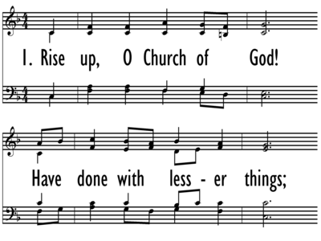

|
|
【神眾教會奮起】 |
|
1 Rise up, O Church of God! 2 Rise up, O Church of God! 3 Rise up, O sons of God! 4 Lift high the cross of Christ!
|
神眾教會奮起，衝破驕傲隔膜， |
|
RISE UP, O CHURCH OF GOD https://digitalsongsandhymns.com/songs/6596

|
|
|
|
|

https://www.youtube.com/watch?v=iH_fHaK9IPA
| Text: | Break Out, O Church of God |
| Author: | Wesley L. Forbis |
| Tune: | ST. THOMAS |
| Composer: | Aaron Williams |
| Short Name: | Wesley Forbis |
| Full Name: | Forbis, Wesley |
| Birth Year: | 1930 |
| Death Year: | 2011 |
Tune Information
| Title: | ST. THOMAS (Williams) |
| Composer: | Aaron Williams (1763) |
| Meter: | 6.6.8.6 |
| Incipit: | 51132 12345 43432 |
| Key: | G Major |
| Copyright: | Public Domain |
| Short Name: | A. Williams |
| Full Name: | Williams, A. (Aaron), 1731-1776 |
| Birth Year: | 1731 |
| Death Year: | 1776 |
Aaron Williams (b. London, England, 1731; d. London, 1776) was a singing teacher, music engraver, and clerk at the Scottish Church, London Wall. He published various church music collections, some intended for rural church choirs. Representative of his compilations are The Universal Psalmodist (1763)— published in the United States as The American Harmony (1769)—The Royal Harmony (1766), The New Universal Psalmodist (1770), and Psalmody in Miniature (1778). His Harmonia Coelestis (1775) included anthems by noted composers.
Bert Polman
Notes
ST. THOMAS is actually lines 5 through 8 of the sixteen-line tune HOLBORN, composed by Aaron Williams (b. London, England, 1731; d. London, 1776) and published in his Collection (1763, 1765) as a setting for Charles Wesley's text "Soldiers of Christ, Arise" (570). The harmonization is by Lowell Mason (PHH 96). Well-suited to part singing, ST. THOMAS must remain stately, with two broad beats per bar.
Williams was a singing teacher, music engraver, and clerk at the Scottish Church, London Wall. He published various church music collections, some intended for rural church choirs. Representative of his compilations are The Universal Psalmodist (1763) – published in the United States as The American Harmony (1769) – The Royal Harmony (1766), The New Universal Psalmodist (1770), and Psalmody in Miniature (1778). His Harmonia Coelestis (1775) included anthems by noted composers.
--Psalter Hymnal Handbook, 1988
Wesley Forbis
FORBIS, Wesley Lee. b. Chickasha, Oklahoma 31 October 1930; d. Goodlettsville, Tennessee, 14 January 2011. Forbis attended the University of Tulsa (BMusEd, 1952; MA in religion, 1955; thesis: ‘Music in the Old Testament: A Survey,’ 1959); Baylor University, Waco, Texas (MA, 1966; thesis: ‘Christian Hymnody: A survey’); and Peabody College (now part of Vanderbilt University), Nashville, Tennessee (PhD, 1968; dissertation, ‘The Galin-Paris-Cheve Method of Rhythmic Instruction: A History’. Forbis directed the Baptist Student Union and taught Bible and church music at Del Mar Junior College in Corpus Christi, Texas (1955-59), and was chairman of the music department at William Jewell College
Aaron Williams (composer) (1731–1776)
Aaron Williams (1731–1776) was a Welsh teacher, composer, and compiler of West Gallery music, active in Britain during the 18th century.
Life[edit]
Williams was probably born in Caldicot, Monmouthshire, the son of William Morgan.[1] He served as clerk of the Presbyterian Scots Church, London Wall.[2]
Publications[edit]
Williams's publications include:[3]
- The Universal Psalmodist, 1763 (2nd ed., 1764; 3rd ed., 1765; 4th ed., 1770)
- [Daniel Bayley], The Royal Melody Complete, 3d ed., Boston, 1767 (an unauthorized compilation of music from William Tans'ur's Royal Melody Complete and Williams's Universal Psalmodist; subsequent editions, entitled The American Harmony, or Universal Psalmodist, were issued by Bayley in Newburyport, Massachusetts in 1769, 1771, 1773 and 1774).
- Royal Harmony; or, The Beauties of Church Music, ca. 1765
- Psalmody in Miniature, 1769 (2nd ed., in 3 books, 1778; supplements added in 1778 and 1780; 3rd ed., in 5 books, 1783)
- The New Universal Psalmodist, 1770 (6th ed., 1775)
- An Ode or Anthem for the New Year, 1770
- Two New Anthems for Christmas-Day, 1770
- Comfort ye, my people: A new Christmas anthem, 1775
- British Psalmody, London, ca. 1785
These publications included several fuguing tunes. Six of his anthems were included in Thomas Williams's Harmonia Coelestis (1780).[4]
Influence on early American sacred music[edit]
Harmonic idiom[edit]
The unorthodox harmonic idiom of the Yankee tunesmiths (the "First New England School" of choral composers) shows the influence of English composers such as Williams and William Tans'ur:
In particular, "it is clear that [William Billings] had studied the works of English psalmodists such as William Tansur and Aaron Williams."[6]
St. Thomas[edit]
Williams's tune "St. Thomas" was originally the second quarter of his longer "Holborn," published in his Universal Psalmodist (1763) and attributed to him based on the statement there, "never before printed."[7] It was first published in its shortened form in Thomas Knibb's The Psalm-Singer's Help (c. 1769),[2] included by Williams in his 1770 New Universal Psalmodist, and printed again in Isaac Smith's A Collection of Psalm Tunes (c. 1780).[7]
In the United States, "St. Thomas" was published in several shape note tunebooks, including the following:
- William Little and William Smith, The Easy Instructor (1801), p. 101
- David Clayton and James Carrell, The Virginia Harmony (1831), p. 79 (attributed to "Handel")
- The Methodist Harmonist (1833), no. 119, p. 93
- Allen D. Carden, The Missouri Harmony (1834), p. 33
- W. L. Chappell, The Western Lyre, new edition, 1835, no. 80
- Lowell Mason and T. H. Mason, The Sacred Harp or Eclectic Harmony, new edition, 1835, p. 89
- B. F. White and E. J. King, The Sacred Harp, appendix to the 1860 edition, p. 293 (also in the 1911 edition of J. S. James, p. 293, misattributed to "William Towser, 1768"; retained in the current 1991 edition, p. 34).
Notes[edit]
- ^ Nicholas Temperley. "Williams, Aaron." In Grove Music Online [1][permanent dead link] (accessed February 3, 2012).
- ^ a b D. W. Steel, The Makers of the Sacred Harp, University of Illinois Press, 2010, p. 168.
- ^ [2] Nicholas Temperley, The Hymn Tune Index
- ^ Biographisch-Bibliographisches Quellen-Lexikon der Musiker und Musikgelehrten, Leipzig: Breitkopf & Härtel, 1904, vol. 10, p. 266.
- ^ S.E. Murray, "Timothy Swan and Yankee Psalmody,"[3] The Musical Quarterly 61 (1975), pp. 433–463, p. 455.
- ^ Steel, pp. 42f.
- ^ a b R.F. Glover (ed.), The Hymnal 1982: Companion, vol. 3A, 1994, pp. 979f.
https://en.wikipedia.org/wiki/Aaron_Williams_(composer)
https://www.baylor.edu/content/services/document.php/98386.pdf
Though his goal for Baptist Hymnal of 1975 fell just a few years short, it was Reynolds himself who wrote about the 1991 hymnal in an edited version of his historical essay, Baptist Hymnody in America. He listed three major events that could be commemorated in light of the year of release of Baptist Hymnal, 1991: “the 300th anniversary of Benjamin Keach’s Spiritual Melody, published in England in 1691; the 100th anniversary of the establishment of the Baptist Sunday School Board … in 1891; and the 50th anniversary of the founding of the Church Music Department at the … Board in 1941.”12
The process of research and development for the 1991 Baptist Hymnal was more extensive than any ever undertaken by the Baptist Sunday School Board. A committee of 96 persons worked under the leadership of Wesley L. Forbis, successor to Reynolds in 1981, and Terry W. York, Project Coordinator. One of the most effective methods employed to secure the widest possible input was a questionnaire sent to every Baptist church in the Convention. As editor, Forbis wrote an introduction to the hymnal in which he stated that the questionnaire was designed “to ensure that this hymnal would be representative of the diversity among Baptists, and, more importantly, its unity.”13 The genuine desire for this new hymnal to stand as a strong symbol of unity among Southern Baptists must have been tempered by the realization that the Convention seemed to be moving in quite the opposite direction. And yet, the widespread acceptance of the Board’s fourth major hymnal seems to suggest that a high level of unity and denominational loyalty still existed among a considerable number of Southern Baptist churches.